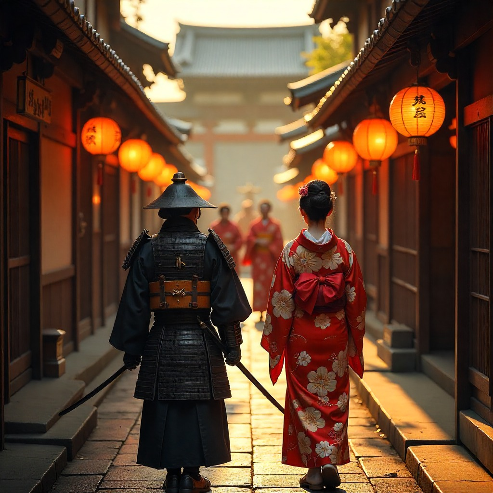

Kioto – Japón Feudal (Período Edo)
Sumérgete en la serenidad y el esplendor del Japón feudal. Entre samuráis, geishas y monjes, conocerás una sociedad donde la disciplina y el arte convivían en perfecta armonía.
Iniciar Viaje

Contexto histórico
Durante el período Edo (1603–1868), Japón vivió una era de estabilidad bajo el shogunato Tokugawa. Kioto, antigua capital imperial, se consolidó como centro cultural y espiritual, con templos, jardines zen y una intensa vida artística.
Mientras los samuráis mantenían el orden social y político, la cultura florecía en forma de poesía, pintura, caligrafía, teatro kabuki y la ceremonia del té. Era un tiempo en que tradición, espiritualidad y disciplina definían la vida cotidiana.
¿Qué vivirás en VR?
- Recorrerás calles de madera iluminadas con faroles, con comerciantes, samuráis y geishas en plena actividad.
- Asistirás a ceremonias en templos budistas, envuelto por cánticos y aromas de incienso.
- Presenciarás un espectáculo de teatro kabuki lleno de color, música y emoción en el corazón de Kioto.